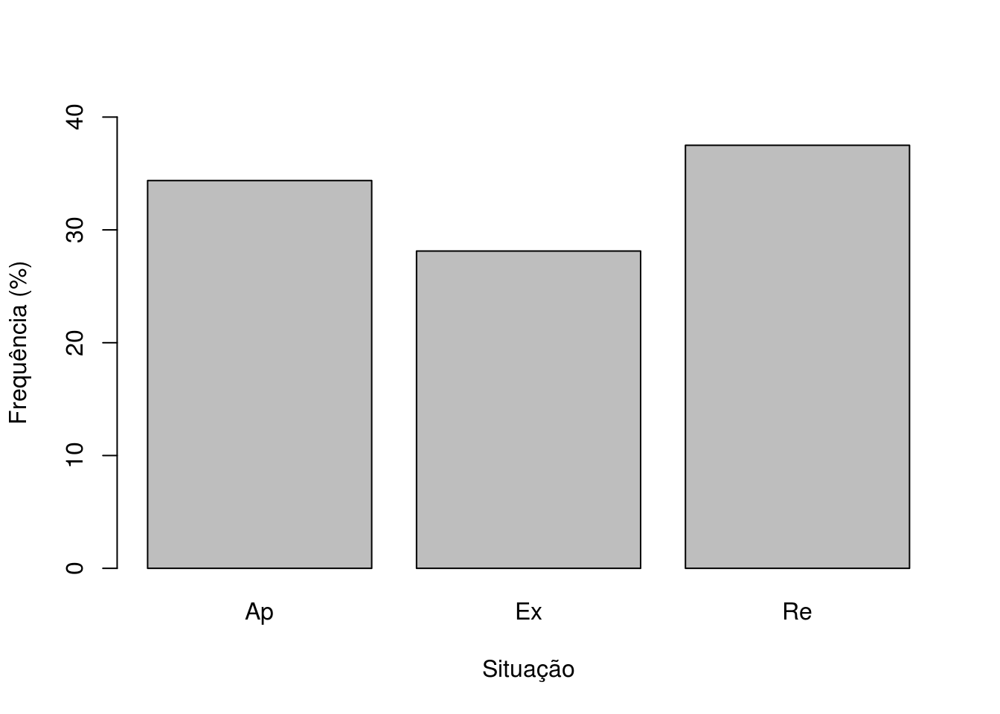
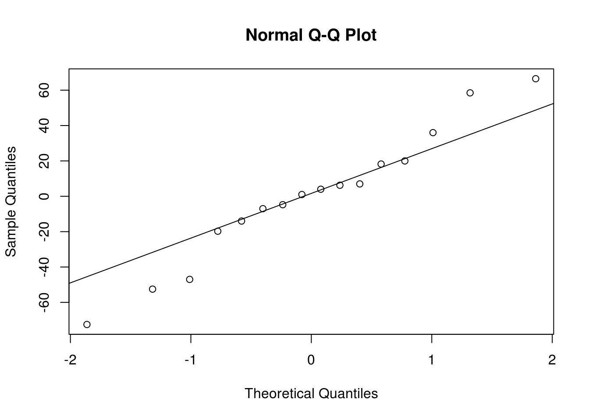
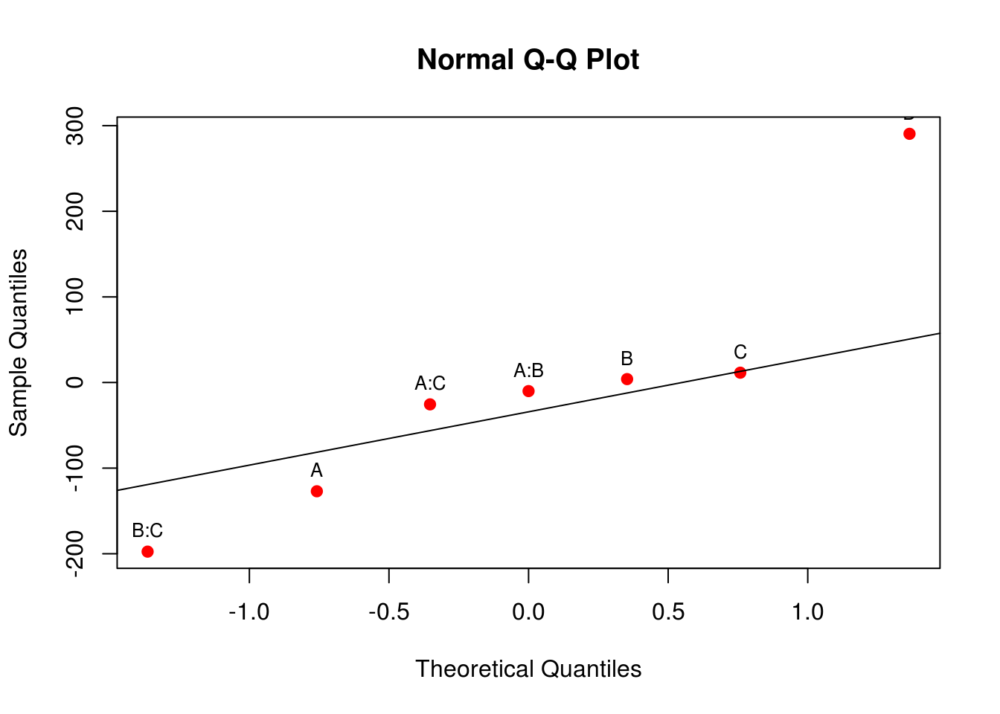
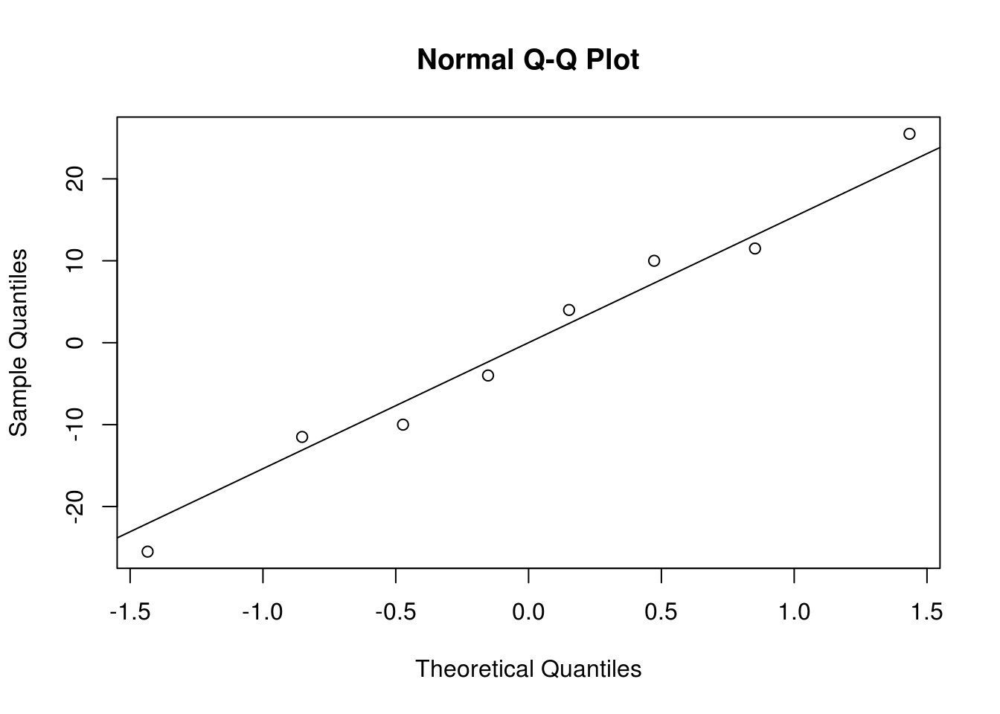
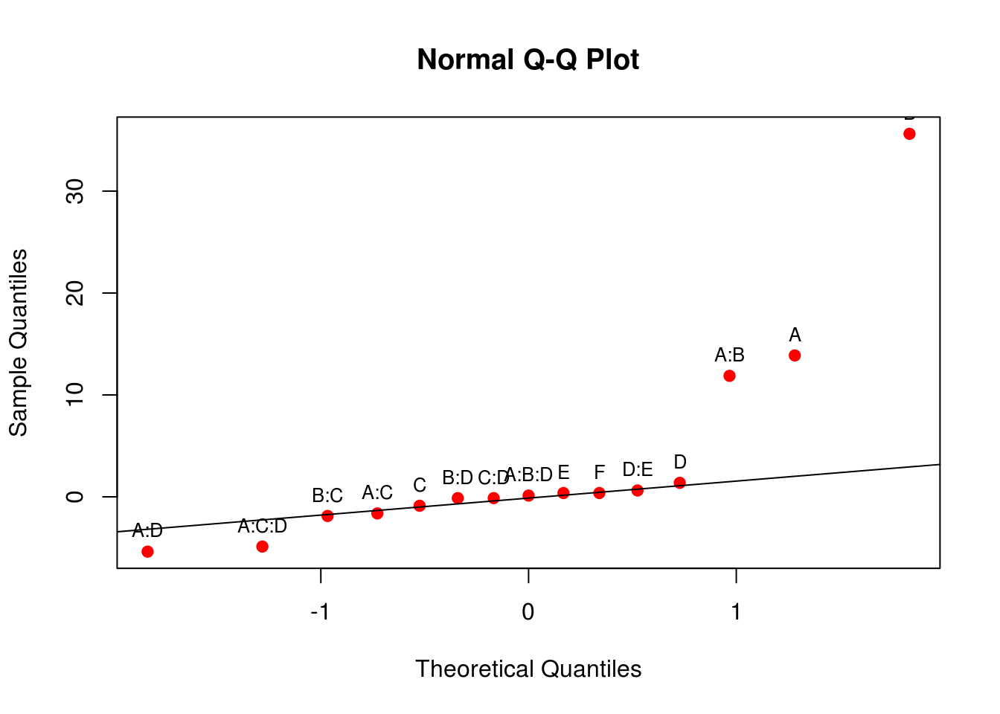
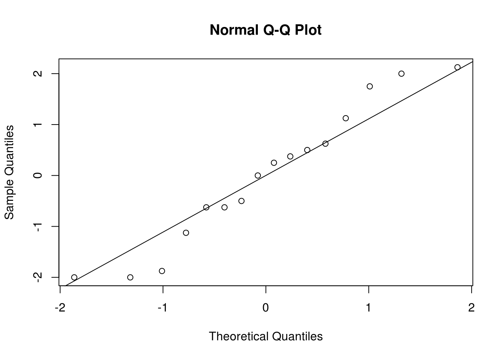

Experimentos fatoriais fracionados
Introdução
Nos experimentos fatoriais \(2^k\), o número de corridas cresce rapidamente com o número de fatores.
k 2 3 4 5 6 7 8 9 10
n 4 8 16 32 64 128 256 512 1024Com isso, se existe necessidade de estudar muitos fatores, esse tipo de planejamento oferece limitação devido ao elevado número de corridas exigidas na sua execução. Ao correr um experimento \(2^k\), é possível estimar efeitos principais, interações duplas e interações até de grau \(k\). Porém, essas interações de ordem elevada podem ser desconsideradas, já que normalmente não são de interesse prático e muitas vezes possuem efeitos desprezíveis. O que se considera mais importante são os efeitos principais e interações baixas (duplas, triplas). Assim, correr o experimento \(2^k\) iria permitir estimar interações altas que de fato não seriam aproveitadas. Então o ponto é: não seria possível reduzir o número de corridas do experimento já qua há pouco interesse nas interações altas? Sim. É exatamente esse o elemento central dos experimentos fatoriais fracionados.
Os fatoriais fracionários tem um uso importante nos experimentos exploratórios (screening experiments). Estes são experimentos em que muitos fatores são considerados, com a finalidade de se identificar aqueles fatores que possuem efeitos grandes. Experimentos exploratórios geralmente são realizados nos estágios iniciais de um projeto, quando é provavel que muitos dos fatores considerados tenham pouco ou nenhum efeito na resposta. Os fatores que forem identificados como importantes serão então investigados mais a fundo em experimentos subsequentes.
A idéia básica é dividir as corridas do fatorial \(2^k\) em frações, exatamente da mesma forma que fazemos para aplicar blocagem. Na blocagem escolhemos um efeito para propositalmente confundirmos com o efeito dos blocos. Nos fatoriais fracionados é similar: define-se efeitos que serão propositalmente confundidos. O confundimento entre efeitos é o preço que se paga para reduzir o número de corridas. Perceba que nosso objetivo é estudar \(k\) fatores onde seria possível estudar com todas as corridas um fatorial com k* < k. O ponto chave ao delinear o experimento é saber escolher os efeitos a serem confundidos para tirar a maior vantagem possível do experimento que é inferir sobre os efeitos principais e interações baixas.
Fatoriais fracionados \(2^{k-1}\) ou meia-fração de um fatorial \(2^k\)
Nesses experimentos avaliamos k fatores fazendo metade das corridas previstas para o fatorial \(2^k\), ou seja
\[ 2^{k-1} = 2^k 2^{-1} = \frac{2^k}{2} \]
Para saber que níveis de cada fator serão corridos, temos que montar a matriz de delineamento do experimento com \(k-1\) fatores. Os níveis do \(k\)-ésimo fator são determinados a partir dos precedentes e do efeito escolhido para o confundimento.
Considere como exemplo, um experimento fatorial \(2^{3-1}\), ou seja, uma meia-fração de um \(2^3\). Esse planejamento possui apenas quatro corridas, em contraste com as oito corridas do planejamento original.
A tabela de sinais para o planejamento \(2^3\) é mostrada abaixo.
# I A B C AB AC BC ABC
# a 1 1 -1 -1 -1 -1 1 1
# b 1 -1 1 -1 -1 1 -1 1
# c 1 -1 -1 1 1 -1 -1 1
# abc 1 1 1 1 1 1 1 1
# (1) 1 -1 -1 -1 1 1 1 -1
# ab 1 1 1 -1 1 -1 -1 -1
# ac 1 1 -1 1 -1 1 -1 -1
# bc 1 -1 1 1 -1 -1 1 -1Repare que esta tabela está propositalmente ordenada em ordem decrescente pela coluna ABC. Se selecionarmos as quatro combinações de tratamento onde a coluna ABC possui sinal positivo, ou seja, \(a\), \(b\), \(c\), \(abc\), estamos selecionando uma meia-fração desse planejamento. Sendo assim, dizemos que \(ABC\) é o gerador dessa fração particular. Além disso, o elemento identidade \(I\) possui também o mesmo sinal (positivo) para as quatro corridas. Assim, chamamos
\[ I = ABC \]
de relação de definção para esse planejamento fracionário. Essa fração com sinal positivo na relação de definição é chamada de fração principal, enquanto que a fração com sinal negativo em ABC,
\[ I = -ABC \]
é chamada de fração alternada.
Ainda analisando a parte superior da tabela acima, note que os sinais que estimam os contrastes para o fator \(A\) são os mesmos que estimam os contrastes para a interação \(BC\). Da mesma forma, os contrastes de \(B\) são os mesmos de \(AC\), e assim por diante. Isso ocorre pois a relação de definição gera uma série de confundimentos no fatorial fracionário. De fato, todos os efeitos e interações estão confundidos com algum outro efeito ou interação. Se multiplicarmos cada fator ou interação pela relação de definição, e usarmos as propriedades da tabela de sinais, podemos ver que:
\[ \begin{align} A \cdot I = A \cdot ABC = A^2BC = BC \\ B \cdot I = B \cdot ABC = AB^2C = AC \\ C \cdot I = C \cdot ABC = ABC^2 = AB \\ \end{align} \]
Portanto, só precisamos estimar os efeitos de A, B, e C, pois BC, AC, e AB estão confundidos com estes efeitos. À estes efeitos que estão confundidos chamamos de pares associados, ou aliases. Em experimentos fatoriais fracionados \(2^{k-1}\) todo efeito possui um par associado. Nesse caso específico de um fracionário \(2^{3-1}\), cada efeito principal tem um par associado de segunda ordem.
Repare então que ao estimar o afeito de A, por exemplo, também estamos estimando o efeito de BC. Se este efeito for grande, não temos como saber se ele é causado por A ou por BC isoladamente, pois eles estão confundidos. No entanto, como vimos anteriormente, é muito mais comum que efeitos principais sejam mais importantes do que efeitos de ordens mais altas. Assim, se assumirmos que efeitos de ordens mais altas tem pouco ou nenhum efeito, então podemos concluir que um efeito grande de A seja exclusivamente desse efeito principal. O mesmo vale para os outros efeitos.
Novamente aqui cabe uma frase já escrita anteriormente: o confundimento entre efeitos é o preço que se paga para reduzir o número de corridas. A ideia do experimento fatorial fracionário é de justamente correr experimentos com muitos fatores em frações menores, verificar os efeitos que realmente importam, e daí sim planejar fatoriais completos, mas com menos fatores, aqueles que realmente importam. Dessa forma, podemos correr uma sequência de experimentos pequenos e eficientes, combinar informações por meio de vários experimentos, e tirar vantagem de aprender sobre o processo que estamos experimentando à medida que continuamos. Esse é um bom exemplo do conceito de experimentos sequenciais.
Construção de um fatorial \(2^{k-1}\)
Um planejamento \(2^{k-1}\) pode ser construído escrevendo as combinações dos tratamentos para um fatorial completo com \(k-1\) fatores, chamado de planejamento básico. Depois, adiciona-se o \(k\)-ésimo fator, identificando seus níveis alto e baixo com os sinais mais e menos da interação de mais alta ordem.
Por exemplo, um fatorial fracionário \(2^{4-1}\) é construído escrevendo o planejamento básico \(2^3\), e então igualando o fator \(D\) com a interação \(ABC\), pois a relação de definição é \(I = ABCD\) e \(D \cdot I = D \cdot ABCD = ABC\).
##======================================================================
## Exemplo 2^(4-1), tabela de sinais do 2^3
da <- expand.grid(A = c(-1, 1), B = c(-1, 1), C = c(-1, 1))
da
# A B C
# 1 -1 -1 -1
# 2 1 -1 -1
# 3 -1 1 -1
# 4 1 1 -1
# 5 -1 -1 1
# 6 1 -1 1
# 7 -1 1 1
# 8 1 1 1
## Níveis de D gerados pelo efeito ABC
da$D <- with(da, A*B*C)
row.names(da) <- apply(da, 1,
function(i) paste(letters[1:4][i==1], collapse = ""))
row.names(da)[1] <- "(1)"
da
# A B C D
# (1) -1 -1 -1 -1
# ad 1 -1 -1 1
# bd -1 1 -1 1
# ab 1 1 -1 -1
# cd -1 -1 1 1
# ac 1 -1 1 -1
# bc -1 1 1 -1
# abcd 1 1 1 1Veja que propositalmente atribuímos os níveis de D sobre o efeito ABC, ou seja, confundimos estes dois efeitos. Mas sabemos que este não é o único par de efeitos que está confundido. Se obtermos a tabela de sinais para todos os efeitos veremos mais efeitos confundidos.
(tab <- model.matrix(~ A*B*C*D, da))
# (Intercept) A B C D A:B A:C B:C A:D B:D C:D A:B:C A:B:D A:C:D
# (1) 1 -1 -1 -1 -1 1 1 1 1 1 1 -1 -1 -1
# ad 1 1 -1 -1 1 -1 -1 1 1 -1 -1 1 -1 -1
# bd 1 -1 1 -1 1 -1 1 -1 -1 1 -1 1 -1 1
# ab 1 1 1 -1 -1 1 -1 -1 -1 -1 1 -1 -1 1
# cd 1 -1 -1 1 1 1 -1 -1 -1 -1 1 1 1 -1
# ac 1 1 -1 1 -1 -1 1 -1 -1 1 -1 -1 1 -1
# bc 1 -1 1 1 -1 -1 -1 1 1 -1 -1 -1 1 1
# abcd 1 1 1 1 1 1 1 1 1 1 1 1 1 1
# B:C:D A:B:C:D
# (1) -1 1
# ad 1 1
# bd -1 1
# ab 1 1
# cd -1 1
# ac 1 1
# bc -1 1
# abcd 1 1
# attr(,"assign")
# [1] 0 1 2 3 4 5 6 7 8 9 10 11 12 13 14 15Os pares de efeitos \((A, BCD), (B, ACD), \ldots, (AB, CD)\) estão confundidos, pois têm os mesmos sinais. Verificar aos pares as colunas para encontrar os pares associados é demorado, por isso é mais fácil fazer operações com o contraste de definição, \(I = ABCD\). Assim, para sabermos quem está confundido com quem, podemos fazer
\[ \begin{align} A \cdot I = A \cdot ABCD = A^2BCD = BCD \\ B \cdot I = B \cdot ABCD = AB^2CD = ACD \\ C \cdot I = C \cdot ABCD = ABC^2D = ABD \\ D \cdot I = D \cdot ABCD = ABCD^2 = ABC \\ \end{align} \]
para os efeitos principais, e
\[ \begin{align} AB \cdot I = AB \cdot ABCD = A^2B^2CD = CD \\ AC \cdot I = AC \cdot ABCD = A^2BC^2D = BD \\ AD \cdot I = AD \cdot ABCD = A^2BCD^2 = BC \\ \end{align} \]
para os efeitos de segunda ordem. Veja que aqui, os efeitos principais estão confundidos com efeitos de terceira ordem, e efeitos de segunda ordem estão confundidos entre si.
No R, podemos obter a tabela de sinais para os efeitos únicos através de
(tab <- unique(tab, MARGIN = 2))
# (Intercept) A B C D A:B A:C B:C
# (1) 1 -1 -1 -1 -1 1 1 1
# ad 1 1 -1 -1 1 -1 -1 1
# bd 1 -1 1 -1 1 -1 1 -1
# ab 1 1 1 -1 -1 1 -1 -1
# cd 1 -1 -1 1 1 1 -1 -1
# ac 1 1 -1 1 -1 -1 1 -1
# bc 1 -1 1 1 -1 -1 -1 1
# abcd 1 1 1 1 1 1 1 1Veja que ao usar esta tabela para estimar os efeitos de I, A, B, C, D, AB, AC, e BC, também estamos estimando BCD, ACD, ABD, ABC, CD, BD, e AD, respectivamente (efeitos confundidos). Note que a interação de ordem mais alta, ABCD, não é estimável pois ela se iguala à média geral do experimento (intercepto), ou seja, é a prórpia relação de definição \(I = ABCD\).
Podemos escolher qualquer contraste para confundir, no entanto, usar as interações mais altas fazem com que os efeitos principais fiquem confundidos com estas, que podem ser assumidas como nulas. Então o valor observado do efeito pode ser considerado como exclusivamente do efeito principal.
Uma outra forma de se construir um planejamento \(2^{k-1}\) é usar a própria relação de definição para “fracionar” o experimento original. Nesse mesmo exemplo do fatorial \(2^{4-1}\), podemos então obter o experimento completo \(2^4\)
db <- expand.grid(A = c(-1, 1), B = c(-1, 1),
C = c(-1, 1), D = c(-1, 1))
row.names(db) <- apply(db, 1,
function(i) paste(letters[1:4][i==1], collapse = ""))
row.names(db)[1] <- "(1)"
db
# A B C D
# (1) -1 -1 -1 -1
# a 1 -1 -1 -1
# b -1 1 -1 -1
# ab 1 1 -1 -1
# c -1 -1 1 -1
# ac 1 -1 1 -1
# bc -1 1 1 -1
# abc 1 1 1 -1
# d -1 -1 -1 1
# ad 1 -1 -1 1
# bd -1 1 -1 1
# abd 1 1 -1 1
# cd -1 -1 1 1
# acd 1 -1 1 1
# bcd -1 1 1 1
# abcd 1 1 1 1Como a relação de definição é \(I = ABCD\), e ela é a geradora da meia-fração do experimento, então so precisamos calcular \(ABCD\)
db$ABCD <- with(db, A*B*C*D)
db[order(db$ABCD, decreasing = TRUE), ]
# A B C D ABCD
# (1) -1 -1 -1 -1 1
# ab 1 1 -1 -1 1
# ac 1 -1 1 -1 1
# bc -1 1 1 -1 1
# ad 1 -1 -1 1 1
# bd -1 1 -1 1 1
# cd -1 -1 1 1 1
# abcd 1 1 1 1 1
# a 1 -1 -1 -1 -1
# b -1 1 -1 -1 -1
# c -1 -1 1 -1 -1
# abc 1 1 1 -1 -1
# d -1 -1 -1 1 -1
# abd 1 1 -1 1 -1
# acd 1 -1 1 1 -1
# bcd -1 1 1 1 -1e selecionar a fração principal de \(ABCD\), ou seja, aquela com sinal positivo em \(ABCD\),
db <- subset(db, ABCD == 1)
db
# A B C D ABCD
# (1) -1 -1 -1 -1 1
# ab 1 1 -1 -1 1
# ac 1 -1 1 -1 1
# bc -1 1 1 -1 1
# ad 1 -1 -1 1 1
# bd -1 1 -1 1 1
# cd -1 -1 1 1 1
# abcd 1 1 1 1 1Veja que automaticamente ficamos com a relação anterior de \(D = ABC\)
db$D == with(db, A*B*C)
# [1] TRUE TRUE TRUE TRUE TRUE TRUE TRUE TRUEE as combinações de tratamentos selecionadas para a meia fração são as mesmas:
cbind(row.names(da), row.names(db))
# [,1] [,2]
# [1,] "(1)" "(1)"
# [2,] "ad" "ab"
# [3,] "bd" "ac"
# [4,] "ab" "bc"
# [5,] "cd" "ad"
# [6,] "ac" "bd"
# [7,] "bc" "cd"
# [8,] "abcd" "abcd"Portanto as duas formas mostradas acima podem ser utilizadas para construir qualquer experimento fatorial fracionado \(2^{k-1}\).
Exercício: construa um experimento fatorial \(2^{5-1}\). Verifique os confundimentos.
Exemplo de um fatorial \(2^4\) convertido para um fatorial \(2^{4-1}\)
Exemplo 14-5, Montgomery (EAPE): processo de ataque químico localizado sobre nitreto, por meio de uma sonda de plasma de pastilha única. Variável resposta: taxa de ataque do nitreto de silício. Variáveis explicativas:
Fatores do experimento
Nível Espaçamento Pressão Vazão de C2F6 Potência
(cm) (m Torr) (cm³ pad/min) (W)
Baixo (-) 0.80 450 125 275
Alto (+) 1.20 550 200 325Este é um experimento fatorial \(2^4\) completo, ou seja, foram corridas todas as 16 combinações de tratamentos possíveis. Vamos re-analisar estes dados completos aqui, e depois realizar o fracionamento desse experimento, com a intenção de verificar se chegamos à mesma conclusão.
##----------------------------------------------------------------------
## Importação
url <- "http://www.leg.ufpr.br/~fernandomayer/data/mont_14-5.txt"
dados <- read.table(url, header = TRUE)
row.names(dados) <- apply(dados, 1,
function(i) paste(letters[1:4][i==1], collapse = ""))
row.names(dados)[1] <- "(1)"
dados
# A B C D y
# (1) -1 -1 -1 -1 550
# a 1 -1 -1 -1 669
# b -1 1 -1 -1 604
# ab 1 1 -1 -1 650
# c -1 -1 1 -1 633
# ac 1 -1 1 -1 642
# bc -1 1 1 -1 601
# abc 1 1 1 -1 635
# d -1 -1 -1 1 1037
# ad 1 -1 -1 1 749
# bd -1 1 -1 1 1052
# abd 1 1 -1 1 868
# cd -1 -1 1 1 1075
# acd 1 -1 1 1 860
# bcd -1 1 1 1 1063
# abcd 1 1 1 1 729
## Definições do experimento
k <- 4
r <- 1
##----------------------------------------------------------------------
## Montando a tabela de sinais
(tab <- model.matrix(~A * B * C * D, data = dados))
# (Intercept) A B C D A:B A:C B:C A:D B:D C:D A:B:C A:B:D A:C:D
# (1) 1 -1 -1 -1 -1 1 1 1 1 1 1 -1 -1 -1
# a 1 1 -1 -1 -1 -1 -1 1 -1 1 1 1 1 1
# b 1 -1 1 -1 -1 -1 1 -1 1 -1 1 1 1 -1
# ab 1 1 1 -1 -1 1 -1 -1 -1 -1 1 -1 -1 1
# c 1 -1 -1 1 -1 1 -1 -1 1 1 -1 1 -1 1
# ac 1 1 -1 1 -1 -1 1 -1 -1 1 -1 -1 1 -1
# bc 1 -1 1 1 -1 -1 -1 1 1 -1 -1 -1 1 1
# abc 1 1 1 1 -1 1 1 1 -1 -1 -1 1 -1 -1
# d 1 -1 -1 -1 1 1 1 1 -1 -1 -1 -1 1 1
# ad 1 1 -1 -1 1 -1 -1 1 1 -1 -1 1 -1 -1
# bd 1 -1 1 -1 1 -1 1 -1 -1 1 -1 1 -1 1
# abd 1 1 1 -1 1 1 -1 -1 1 1 -1 -1 1 -1
# cd 1 -1 -1 1 1 1 -1 -1 -1 -1 1 1 1 -1
# acd 1 1 -1 1 1 -1 1 -1 1 -1 1 -1 -1 1
# bcd 1 -1 1 1 1 -1 -1 1 -1 1 1 -1 -1 -1
# abcd 1 1 1 1 1 1 1 1 1 1 1 1 1 1
# B:C:D A:B:C:D
# (1) -1 1
# a -1 -1
# b 1 -1
# ab 1 1
# c 1 -1
# ac 1 1
# bc -1 1
# abc -1 -1
# d 1 -1
# ad 1 1
# bd -1 1
# abd -1 -1
# cd -1 1
# acd -1 -1
# bcd 1 -1
# abcd 1 1
# attr(,"assign")
# [1] 0 1 2 3 4 5 6 7 8 9 10 11 12 13 14 15
##----------------------------------------------------------------------
## Estimativa dos efeitos
y <- dados$y
## Contrastes
contr <- t(tab[, -1]) %*% y
## Efeitos = contraste/(n2^{k-1})
ef <- contr/(r * 2^(k - 1))
##----------------------------------------------------------------------
## Gráfico de probabilidade normal dos efeitos estimados
qqaux <- qqnorm(ef, col = 2, pch = 19); qqline(ef)
text(qqaux$x, qqaux$y, rownames(qqaux$y), cex = 0.8, pos = 3)
##----------------------------------------------------------------------
## Ajuste do modelo
## Como vimos no gráfico anterior, as interações de ordem maior do que 2
## são desnecessárias, portanto vamos ajustar o modelo com interações de
## até segunda ordem apenas
m0 <- lm(y ~ (A + B + C + D)^2, data = dados)
anova(m0)
# Analysis of Variance Table
#
# Response: y
# Df Sum Sq Mean Sq F value Pr(>F)
# A 1 41311 41311 20.2765 0.006382 **
# B 1 11 11 0.0052 0.945391
# C 1 218 218 0.1068 0.757069
# D 1 374850 374850 183.9879 3.903e-05 ***
# A:B 1 248 248 0.1218 0.741351
# A:C 1 2475 2475 1.2148 0.320582
# A:D 1 94403 94403 46.3357 0.001042 **
# B:C 1 7700 7700 3.7794 0.109498
# B:D 1 2 2 0.0008 0.978978
# C:D 1 18 18 0.0089 0.928641
# Residuals 5 10187 2037
# ---
# Signif. codes: 0 '***' 0.001 '**' 0.01 '*' 0.05 '.' 0.1 ' ' 1
## Modelo com efeitos significativos apenas
m1 <- update(m0, . ~ A * D, data = dados)
anova(m1)
# Analysis of Variance Table
#
# Response: y
# Df Sum Sq Mean Sq F value Pr(>F)
# A 1 41311 41311 23.767 0.0003816 ***
# D 1 374850 374850 215.661 4.951e-09 ***
# A:D 1 94403 94403 54.312 8.621e-06 ***
# Residuals 12 20858 1738
# ---
# Signif. codes: 0 '***' 0.001 '**' 0.01 '*' 0.05 '.' 0.1 ' ' 1
##----------------------------------------------------------------------
## Residuos do modelo
res <- residuals(m1)
## Quantis normais
qqnorm(res); qqline(res)
Para ilustrar o uso da meia-fração, suponha que decidimos usar o planejamento \(2^{4-1}\), com a relação de definição \(I = ABCD\), para investigar os quatro fatores deste experimento. Esse planejamento será construído com o planejamento básico \(2^3\) nos fatores A, B, C, e então estabelecendo os níveis do quarto fator \(D = ABC\), pois, através da relação de definição, temos que \(D \cdot I = D \cdot ABCD = ABC\).
O primeiro passo é então criar um planejamento \(2^3\) completo, e incluir a coluna \(D\) como sendo \(D = ABC\)
dados2 <- expand.grid(A = c(-1, 1), B = c(-1, 1), C = c(-1, 1))
dados2$D <- with(dados2, A*B*C)
row.names(dados2) <- apply(dados2, 1,
function(i) paste(letters[1:4][i==1], collapse = ""))
row.names(dados2)[1] <- "(1)"
dados2
# A B C D
# (1) -1 -1 -1 -1
# ad 1 -1 -1 1
# bd -1 1 -1 1
# ab 1 1 -1 -1
# cd -1 -1 1 1
# ac 1 -1 1 -1
# bc -1 1 1 -1
# abcd 1 1 1 1Outra forma de montar esse experimento é a seguinte. Se a relação de definição é \(I = ABCD\), então podemos usar os sinais dessa interação para separar as frações do experimento.
dados$ABCD <- with(dados, A*B*C*D)
dados[order(dados$ABCD, decreasing = TRUE), ]
# A B C D y ABCD
# (1) -1 -1 -1 -1 550 1
# ab 1 1 -1 -1 650 1
# ac 1 -1 1 -1 642 1
# bc -1 1 1 -1 601 1
# ad 1 -1 -1 1 749 1
# bd -1 1 -1 1 1052 1
# cd -1 -1 1 1 1075 1
# abcd 1 1 1 1 729 1
# a 1 -1 -1 -1 669 -1
# b -1 1 -1 -1 604 -1
# c -1 -1 1 -1 633 -1
# abc 1 1 1 -1 635 -1
# d -1 -1 -1 1 1037 -1
# abd 1 1 -1 1 868 -1
# acd 1 -1 1 1 860 -1
# bcd -1 1 1 1 1063 -1As combinações de tratamento com sinal positivo em ABCD serão da fração principal, e os demais serão da fração alternada. Dessa forma, se ficarmos apenas com o sinal positivo de ABCD
dados <- subset(dados, ABCD == 1)
dados
# A B C D y ABCD
# (1) -1 -1 -1 -1 550 1
# ab 1 1 -1 -1 650 1
# ac 1 -1 1 -1 642 1
# bc -1 1 1 -1 601 1
# ad 1 -1 -1 1 749 1
# bd -1 1 -1 1 1052 1
# cd -1 -1 1 1 1075 1
# abcd 1 1 1 1 729 1Ficamos essencialmente com o mesmo planejamento fracionário. Note que dessa forma, automaticamente temos \(D = ABC\)
all.equal(dados$D, with(dados, A * B * C))
# [1] TRUEAgora sabemos que as combinações de tratamento que serão corridas na meia-fração serão
row.names(dados)
# [1] "(1)" "ab" "ac" "bc" "ad" "bd" "cd" "abcd"O próximo passo então é criar a tabela de sinais
(tab <- model.matrix(~ A*B*C*D, data = dados))
# (Intercept) A B C D A:B A:C B:C A:D B:D C:D A:B:C A:B:D A:C:D
# (1) 1 -1 -1 -1 -1 1 1 1 1 1 1 -1 -1 -1
# ab 1 1 1 -1 -1 1 -1 -1 -1 -1 1 -1 -1 1
# ac 1 1 -1 1 -1 -1 1 -1 -1 1 -1 -1 1 -1
# bc 1 -1 1 1 -1 -1 -1 1 1 -1 -1 -1 1 1
# ad 1 1 -1 -1 1 -1 -1 1 1 -1 -1 1 -1 -1
# bd 1 -1 1 -1 1 -1 1 -1 -1 1 -1 1 -1 1
# cd 1 -1 -1 1 1 1 -1 -1 -1 -1 1 1 1 -1
# abcd 1 1 1 1 1 1 1 1 1 1 1 1 1 1
# B:C:D A:B:C:D
# (1) -1 1
# ab 1 1
# ac 1 1
# bc -1 1
# ad 1 1
# bd -1 1
# cd -1 1
# abcd 1 1
# attr(,"assign")
# [1] 0 1 2 3 4 5 6 7 8 9 10 11 12 13 14 15Note que os tratamentos possuem pares combinados (aliases), pois muitas colunas são idênticas. Isso é natural, uma vez que temos um efeito confundido por definição, \(D = ABC\), outros também devem estar. Para saber quem são os pares combinados desse experimento, basta multiplicar cada fator pela relação de definição, por exemplo,
\[ \begin{align} A \cdot I = A \cdot ABCD = A^2BCD = BCD \\ B \cdot I = B \cdot ABCD = AB^2CD = ACD \\ C \cdot I = C \cdot ABCD = ABC^2D = ABD \\ D \cdot I = D \cdot ABCD = ABCD^2 = ABC \\ \end{align} \]
Portanto, notamos que todos os efeitos principais estão confundidos com todas as interações de terceira ordem. Portanto, ao estimar um efeito principal, estamos também estimado a respectiva interação de terceira ordem. Como acreditamos que os efeitos das interações de ordem alta são desprezíveis, então podemos supor que o efeito estimado é de fato do efeto principal.
Vemos também que as interações de segunda ordem estão associadas entre si, pois,
\[ \begin{align} AB \cdot I = AB \cdot ABCD = A^2B^2CD = CD \\ AC \cdot I = AC \cdot ABCD = A^2BC^2D = BD \\ AD \cdot I = AD \cdot ABCD = A^2BCD^2 = BC \\ \end{align} \]
Para facilitar a determinação dos pares associados, podemos usar a função abaixo:
aliases <- function(ef, cd){
## ef = efeitos
## cd = contraste de definição
ali <- function(ef, cd){
ef <- gsub("\\W", "", ef)
ef <- unlist(strsplit(ef, ""))
cd <- gsub("\\W", "", cd)
cd <- unlist(strsplit(cd, ""))
x <- sort(c(ef, cd))
tb <- table(x)
paste(names(tb[tb==1]), collapse="")
}
sapply(ef, simplify=FALSE,
function(e){
x <- sapply(cd, function(i){
x <- ali(e, i)
})
x[order(nchar(x))]
})
}Assim:
aliases(colnames(tab)[-c(1,16)], "ABCD")
# $A
# ABCD
# "BCD"
#
# $B
# ABCD
# "ACD"
#
# $C
# ABCD
# "ABD"
#
# $D
# ABCD
# "ABC"
#
# $`A:B`
# ABCD
# "CD"
#
# $`A:C`
# ABCD
# "BD"
#
# $`B:C`
# ABCD
# "AD"
#
# $`A:D`
# ABCD
# "BC"
#
# $`B:D`
# ABCD
# "AC"
#
# $`C:D`
# ABCD
# "AB"
#
# $`A:B:C`
# ABCD
# "D"
#
# $`A:B:D`
# ABCD
# "C"
#
# $`A:C:D`
# ABCD
# "B"
#
# $`B:C:D`
# ABCD
# "A"Com isso, não faz sentido estimar o efeito para todas as interações de segunda ordem, assim como estimar os efeitos de terceira ordem. Estimar os efeitos principais (que é de interesse), é virtualmente igual a estimar os efeitos de terceira ordem. Estimar os efeitos de segunda ordem AB, AC, e AD, é o mesmo que estimar CD, BD, e BC, respectivamente.
Portanto, podemos identificar os fatores únicos na tabela de sinais
(tab <- unique(tab, MARGIN = 2))
# (Intercept) A B C D A:B A:C B:C
# (1) 1 -1 -1 -1 -1 1 1 1
# ab 1 1 1 -1 -1 1 -1 -1
# ac 1 1 -1 1 -1 -1 1 -1
# bc 1 -1 1 1 -1 -1 -1 1
# ad 1 1 -1 -1 1 -1 -1 1
# bd 1 -1 1 -1 1 -1 1 -1
# cd 1 -1 -1 1 1 1 -1 -1
# abcd 1 1 1 1 1 1 1 1A partir dessa tabela, podemos prosseguir a análise de forma usual, calculando os contrastes e efeitos, e verificando o tamanho dos efeitos através do gráfico de probabilidades normal. Note apenas que o \(k\) para esse experimento fracionado é 3, e não 4 como o original, pois ele é um \(2^{4-1}\) = \(2^{3}\)
##----------------------------------------------------------------------
## Estimativa dos efeitos
y <- dados$y
## Contrastes
contr <- t(tab[, -1]) %*% y
## Efeitos = contraste/(r2^{k-1})
## NOTE que agora o k é 3, pois o experimento básico é 2^{4-1} = 2^3
k <- 3
ef <- contr/(r * 2^(k-1))
##----------------------------------------------------------------------
## Gráfico de probabilidade normal dos efeitos estimados
qqaux <- qqnorm(ef, col = 2, pch = 19); qqline(ef)
text(qqaux$x, qqaux$y, rownames(qqaux$y), cex = 0.8, pos = 3)
Através destes resultados vemos que se destacam os fatores A, D, e a interação BC. Note que o par associado de BC é AD, portanto acreditamos que a interação que de fato é importante é AD. Esse resultado está de acordo com o resultado do experimento completo mostrado acima.
Continuamos a análise como antes, ajustando um modelo apenas com os efeitos que notamos serem importantes na análise visual acima.
##----------------------------------------------------------------------
## Ajuste do modelo
## Modelo com efeitos significativos apenas
## NOTE que os efeitos importantes foram A, D, e BC, mas como vimos,
## BC = AD, portanto podemos ajustar o modelo com A + D + A:D
m2 <- lm(y ~ A * D, data = dados)
anova(m2)
# Analysis of Variance Table
#
# Response: y
# Df Sum Sq Mean Sq F value Pr(>F)
# A 1 32258 32258 71.804 0.0010631 **
# D 1 168781 168781 375.694 4.177e-05 ***
# A:D 1 78013 78013 173.650 0.0001916 ***
# Residuals 4 1797 449
# ---
# Signif. codes: 0 '***' 0.001 '**' 0.01 '*' 0.05 '.' 0.1 ' ' 1
##----------------------------------------------------------------------
## Residuos do modelo
res <- residuals(m2)
## Quantis normais
qqnorm(res); qqline(res)
Frações menores: o fatorial fracionário \(2^{k-p}\)
Em geral , um planejamento fatorial \(2^k\) pode ser corrido em uma fração \(1/2^p\), chamado de um planejamento fatorial fracionário \(2^{k-p}\), pois
\[ 2^{k-p} = 2^k 2^{-p} = \frac{2^k}{2^p} \]
Portanto, uma fração \(1/4\) é chamada de um planejamento \(2^{k-2}\), uma fração \(1/8\) é chamada de um planejamento \(2^{k-3}\), uma fração \(1/16\) é chamada de \(2^{k-4}\), e assim por diante. Note que os experimentos com meia fração são um caso particular do planejamento \(2^{k-p}\) com \(p = 1\).
Com o objetivo de ilustrar a fração \(1/4\), considere um experimento com seis fatores, e suponha que o pesquisador esteja interessado principalmente nos efeitos principais, com alguma informação sobre as interações de segunda ordem. Um planejamento \(2^{6-1}\) iria requerer 32 corridas. e necessitaríamos de 31 graus de liberdade para estimar os efeitos. Como há somente 6 efeitos principais e 15 interações de segunda ordem, a meia-fração é ineficiente pois ela requer mais corridas do que o necessário para o interesse do pesquisador. Suponha que consideramos uma fração \(1/4\), ou um experimento \(2^{6-2}\). Esse planejamento contém 16 corridas, e com 15 graus de liberdade permitirá que todos os efeitos principais sejam estimados, com alguma capacidade de gerar informações sobre as interações de segunda ordem.
De modo a gerar esse planejamento, escrevemos o planejamento básico \(2^4\) nos fatores A, B, C, e D, e então adicionamos duas novas colunas para E e F.
## Experimento básico 2^4
da <- expand.grid(A = c(-1, 1), B = c(-1, 1),
C = c(-1, 1), D = c(-1, 1))
row.names(da) <- apply(da, 1,
function(i) paste(letters[1:4][i==1], collapse = ""))
row.names(da)[1] <- "(1)"
da
# A B C D
# (1) -1 -1 -1 -1
# a 1 -1 -1 -1
# b -1 1 -1 -1
# ab 1 1 -1 -1
# c -1 -1 1 -1
# ac 1 -1 1 -1
# bc -1 1 1 -1
# abc 1 1 1 -1
# d -1 -1 -1 1
# ad 1 -1 -1 1
# bd -1 1 -1 1
# abd 1 1 -1 1
# cd -1 -1 1 1
# acd 1 -1 1 1
# bcd -1 1 1 1
# abcd 1 1 1 1Um experimento \(2^{k-2}\) requer dois contrastes de definição, ou os geradores do experimento. Considere que os dois geradores são
\[ I = ABCE \qquad \text{e} \qquad I = BCDF \]
Dessa forma, a coluna \(E\) seria encontrada a partir de \(E \cdot I = E \cdot ABCE = ABC\), e a coluna \(F\) seria encontrada com \(F \cdot I = F \cdot BCDF = BCD\).
da$E <- with(da, A*B*C)
da$F <- with(da, B*C*D)
row.names(da) <- apply(da, 1,
function(i) paste(letters[1:6][i==1], collapse = ""))
row.names(da)[1] <- "(1)"
da
# A B C D E F
# (1) -1 -1 -1 -1 -1 -1
# ae 1 -1 -1 -1 1 -1
# bef -1 1 -1 -1 1 1
# abf 1 1 -1 -1 -1 1
# cef -1 -1 1 -1 1 1
# acf 1 -1 1 -1 -1 1
# bc -1 1 1 -1 -1 -1
# abce 1 1 1 -1 1 -1
# df -1 -1 -1 1 -1 1
# adef 1 -1 -1 1 1 1
# bde -1 1 -1 1 1 -1
# abd 1 1 -1 1 -1 -1
# cde -1 -1 1 1 1 -1
# acd 1 -1 1 1 -1 -1
# bcdf -1 1 1 1 -1 1
# abcdef 1 1 1 1 1 1No entanto, sabemos que o produto de quaisquer duas colunas na tabela de sinais do planejamento \(2^k\) é apenas outra coluna da tabela. Consequentemente, o produto entre \(ABCE\) e \(BCDF\)
\[ ABCE \cdot BCDF = AB^2C^2DEF = ADEF \]
é a interação generalizada de ABCE com BCDF, e também uma coluna identidade. Como consequência, o planejamento \(2^{6-2}\) possui uma relação completa de definição dada por
\[ I = ABCE = BCDF = ADEF \]
Referimo-nos a cada termo em uma relação de definição (ex.: \(ABCE\)) como uma palavra. Para encontrar o par associado de qualquer efeito, simplesmente multiplicamos esse efeito por cada palavra na relação completa de definição acima. Por exemplo, o par associado de \(A\) é
\[ A = BCE = ABCDF = DEF \]
Para as duas relações de definição acima, vemos que os pares associados são
\[ \begin{align} E = ABC = ADF = BCDEF \\ F = BCD = ADE = ABCEF \end{align} \]
Portanto, poderíamos utilizar qualquer uma das interações \(ABC\), \(ADF\), ou \(BCDEF\) para gerar a coluna \(E\), e da mesma forma, o resultado seria o mesmo para a coluna \(F\) se utilizásemos qualquer uma das interações: \(BCD\), \(ADE\), ou \(ABCEF\).
Com isso, vemos que as 16 combinações de tratamentos que deveriam ser corridas neste fatorial \(2^{6-2}\) são
row.names(da)
# [1] "(1)" "ae" "bef" "abf" "cef" "acf" "bc"
# [8] "abce" "df" "adef" "bde" "abd" "cde" "acd"
# [15] "bcdf" "abcdef"Outra forma de construir esse experimento \(2^{6-2}\), é usando diretamente os contrastes de definição, assim como fizemos no caso da meia-fração. A diferença é que aqui, como temos duas relações de definição, precisamos calcular as duas colunas com estas interações, e as frações serão definidas pelas combinações \((1,1), (1,-1), (-1,1), (-1,-1)\) destas duas colunas.
Para fazer dessa forma, geramos o experimento \(2^6\) completo
db <- expand.grid(A = c(-1, 1), B = c(-1, 1),
C = c(-1, 1), D = c(-1, 1),
E = c(-1, 1), F = c(-1, 1))
row.names(db) <- apply(db, 1,
function(i) paste(letters[1:6][i==1], collapse = ""))
row.names(db)[1] <- "(1)"
db
# A B C D E F
# (1) -1 -1 -1 -1 -1 -1
# a 1 -1 -1 -1 -1 -1
# b -1 1 -1 -1 -1 -1
# ab 1 1 -1 -1 -1 -1
# c -1 -1 1 -1 -1 -1
# ac 1 -1 1 -1 -1 -1
# bc -1 1 1 -1 -1 -1
# abc 1 1 1 -1 -1 -1
# d -1 -1 -1 1 -1 -1
# ad 1 -1 -1 1 -1 -1
# bd -1 1 -1 1 -1 -1
# abd 1 1 -1 1 -1 -1
# cd -1 -1 1 1 -1 -1
# acd 1 -1 1 1 -1 -1
# bcd -1 1 1 1 -1 -1
# abcd 1 1 1 1 -1 -1
# e -1 -1 -1 -1 1 -1
# ae 1 -1 -1 -1 1 -1
# be -1 1 -1 -1 1 -1
# abe 1 1 -1 -1 1 -1
# ce -1 -1 1 -1 1 -1
# ace 1 -1 1 -1 1 -1
# bce -1 1 1 -1 1 -1
# abce 1 1 1 -1 1 -1
# de -1 -1 -1 1 1 -1
# ade 1 -1 -1 1 1 -1
# bde -1 1 -1 1 1 -1
# abde 1 1 -1 1 1 -1
# cde -1 -1 1 1 1 -1
# acde 1 -1 1 1 1 -1
# bcde -1 1 1 1 1 -1
# abcde 1 1 1 1 1 -1
# f -1 -1 -1 -1 -1 1
# af 1 -1 -1 -1 -1 1
# bf -1 1 -1 -1 -1 1
# abf 1 1 -1 -1 -1 1
# cf -1 -1 1 -1 -1 1
# acf 1 -1 1 -1 -1 1
# bcf -1 1 1 -1 -1 1
# abcf 1 1 1 -1 -1 1
# df -1 -1 -1 1 -1 1
# adf 1 -1 -1 1 -1 1
# bdf -1 1 -1 1 -1 1
# abdf 1 1 -1 1 -1 1
# cdf -1 -1 1 1 -1 1
# acdf 1 -1 1 1 -1 1
# bcdf -1 1 1 1 -1 1
# abcdf 1 1 1 1 -1 1
# ef -1 -1 -1 -1 1 1
# aef 1 -1 -1 -1 1 1
# bef -1 1 -1 -1 1 1
# abef 1 1 -1 -1 1 1
# cef -1 -1 1 -1 1 1
# acef 1 -1 1 -1 1 1
# bcef -1 1 1 -1 1 1
# abcef 1 1 1 -1 1 1
# def -1 -1 -1 1 1 1
# adef 1 -1 -1 1 1 1
# bdef -1 1 -1 1 1 1
# abdef 1 1 -1 1 1 1
# cdef -1 -1 1 1 1 1
# acdef 1 -1 1 1 1 1
# bcdef -1 1 1 1 1 1
# abcdef 1 1 1 1 1 1Como as relações de definição são \(I = ABCE\) e \(I = BCDF\), calculamos estas duas colunas a partir desse experimento completo
## Usando diretamente as relações de definição
## I = ABCE e I = BCDF
db$ABCE <- with(db, A*B*C*E)
db$BCDF <- with(db, B*C*D*F)Se olharmos este experimento ordenado por estas duas colunas, vemos que temos as quatro frações determinadas pela combinação de sinais destas duas colunas
db[order(db$ABCE, db$BCDF, decreasing = TRUE), ]
# A B C D E F ABCE BCDF
# (1) -1 -1 -1 -1 -1 -1 1 1
# bc -1 1 1 -1 -1 -1 1 1
# abd 1 1 -1 1 -1 -1 1 1
# acd 1 -1 1 1 -1 -1 1 1
# ae 1 -1 -1 -1 1 -1 1 1
# abce 1 1 1 -1 1 -1 1 1
# bde -1 1 -1 1 1 -1 1 1
# cde -1 -1 1 1 1 -1 1 1
# abf 1 1 -1 -1 -1 1 1 1
# acf 1 -1 1 -1 -1 1 1 1
# df -1 -1 -1 1 -1 1 1 1
# bcdf -1 1 1 1 -1 1 1 1
# bef -1 1 -1 -1 1 1 1 1
# cef -1 -1 1 -1 1 1 1 1
# adef 1 -1 -1 1 1 1 1 1
# abcdef 1 1 1 1 1 1 1 1
# ab 1 1 -1 -1 -1 -1 1 -1
# ac 1 -1 1 -1 -1 -1 1 -1
# d -1 -1 -1 1 -1 -1 1 -1
# bcd -1 1 1 1 -1 -1 1 -1
# be -1 1 -1 -1 1 -1 1 -1
# ce -1 -1 1 -1 1 -1 1 -1
# ade 1 -1 -1 1 1 -1 1 -1
# abcde 1 1 1 1 1 -1 1 -1
# f -1 -1 -1 -1 -1 1 1 -1
# bcf -1 1 1 -1 -1 1 1 -1
# abdf 1 1 -1 1 -1 1 1 -1
# acdf 1 -1 1 1 -1 1 1 -1
# aef 1 -1 -1 -1 1 1 1 -1
# abcef 1 1 1 -1 1 1 1 -1
# bdef -1 1 -1 1 1 1 1 -1
# cdef -1 -1 1 1 1 1 1 -1
# a 1 -1 -1 -1 -1 -1 -1 1
# abc 1 1 1 -1 -1 -1 -1 1
# bd -1 1 -1 1 -1 -1 -1 1
# cd -1 -1 1 1 -1 -1 -1 1
# e -1 -1 -1 -1 1 -1 -1 1
# bce -1 1 1 -1 1 -1 -1 1
# abde 1 1 -1 1 1 -1 -1 1
# acde 1 -1 1 1 1 -1 -1 1
# bf -1 1 -1 -1 -1 1 -1 1
# cf -1 -1 1 -1 -1 1 -1 1
# adf 1 -1 -1 1 -1 1 -1 1
# abcdf 1 1 1 1 -1 1 -1 1
# abef 1 1 -1 -1 1 1 -1 1
# acef 1 -1 1 -1 1 1 -1 1
# def -1 -1 -1 1 1 1 -1 1
# bcdef -1 1 1 1 1 1 -1 1
# b -1 1 -1 -1 -1 -1 -1 -1
# c -1 -1 1 -1 -1 -1 -1 -1
# ad 1 -1 -1 1 -1 -1 -1 -1
# abcd 1 1 1 1 -1 -1 -1 -1
# abe 1 1 -1 -1 1 -1 -1 -1
# ace 1 -1 1 -1 1 -1 -1 -1
# de -1 -1 -1 1 1 -1 -1 -1
# bcde -1 1 1 1 1 -1 -1 -1
# af 1 -1 -1 -1 -1 1 -1 -1
# abcf 1 1 1 -1 -1 1 -1 -1
# bdf -1 1 -1 1 -1 1 -1 -1
# cdf -1 -1 1 1 -1 1 -1 -1
# ef -1 -1 -1 -1 1 1 -1 -1
# bcef -1 1 1 -1 1 1 -1 -1
# abdef 1 1 -1 1 1 1 -1 -1
# acdef 1 -1 1 1 1 1 -1 -1Novamente se assumirmos que a combinação \((1,1)\) é a fração principal, então o experimento fracionado \(2^{6-2}\) seria obtido com
db <- subset(db, ABCE == 1 & BCDF == 1)
db
# A B C D E F ABCE BCDF
# (1) -1 -1 -1 -1 -1 -1 1 1
# bc -1 1 1 -1 -1 -1 1 1
# abd 1 1 -1 1 -1 -1 1 1
# acd 1 -1 1 1 -1 -1 1 1
# ae 1 -1 -1 -1 1 -1 1 1
# abce 1 1 1 -1 1 -1 1 1
# bde -1 1 -1 1 1 -1 1 1
# cde -1 -1 1 1 1 -1 1 1
# abf 1 1 -1 -1 -1 1 1 1
# acf 1 -1 1 -1 -1 1 1 1
# df -1 -1 -1 1 -1 1 1 1
# bcdf -1 1 1 1 -1 1 1 1
# bef -1 1 -1 -1 1 1 1 1
# cef -1 -1 1 -1 1 1 1 1
# adef 1 -1 -1 1 1 1 1 1
# abcdef 1 1 1 1 1 1 1 1Portanto, as 16 combinações de tratamentos a serem corridas neste experimento seriam
row.names(db)
# [1] "(1)" "bc" "abd" "acd" "ae" "abce" "bde"
# [8] "cde" "abf" "acf" "df" "bcdf" "bef" "cef"
# [15] "adef" "abcdef"E note que é o mesmo resultado se tivessemos planejado o experimento com o método anterior
cbind(sort(row.names(da)), sort(row.names(db)))
# [,1] [,2]
# [1,] "(1)" "(1)"
# [2,] "abcdef" "abcdef"
# [3,] "abce" "abce"
# [4,] "abd" "abd"
# [5,] "abf" "abf"
# [6,] "acd" "acd"
# [7,] "acf" "acf"
# [8,] "adef" "adef"
# [9,] "ae" "ae"
# [10,] "bc" "bc"
# [11,] "bcdf" "bcdf"
# [12,] "bde" "bde"
# [13,] "bef" "bef"
# [14,] "cde" "cde"
# [15,] "cef" "cef"
# [16,] "df" "df"Exemplo: fatorial \(2^{6-2}\)
Exemplo 14-9, Montgomery (EAPE): encolhimento excessivo em peças de moldagem por injeção. Analisando 6 fatores em um experimento fatorial fracionado \(2^{6-2}\), foram realizadas 16 corridas para estes seis fatores. O planejamento foi construído escrevendo um planejamento básico \(2^4\) nos fatores \(A\), \(B\), \(C\), e \(D\), e então estabelecendo \(E = ABC\), e \(F = BCD\), pois as relações de definição escolhidas foram \(I = ABCE\), e \(I = BCDF\). O objetivo do planejamento era identificar os fatores que causavam o encolhimento excessivo, portanto as combinações de fatores que gerem menores valores da variável resposta (encolhimento) deverão ser utilizadas no processo de fabricação. Os dados deste experimento estão abaixo.
##======================================================================
## Importa a base de dados
url <- "http://www.leg.ufpr.br/~fernandomayer/data/montgomery_ex_14-9.txt"
dados <- read.table(url, header = TRUE)
row.names(dados) <- apply(dados, 1,
function(i) paste(letters[1:6][i==1], collapse = ""))
row.names(dados)[1] <- "(1)"
dados
# A B C D E F y
# (1) -1 -1 -1 -1 -1 -1 6
# ae 1 -1 -1 -1 1 -1 10
# bef -1 1 -1 -1 1 1 32
# abf 1 1 -1 -1 -1 1 60
# cef -1 -1 1 -1 1 1 4
# acf 1 -1 1 -1 -1 1 15
# bc -1 1 1 -1 -1 -1 26
# abce 1 1 1 -1 1 -1 60
# df -1 -1 -1 1 -1 1 8
# adef 1 -1 -1 1 1 1 12
# bde -1 1 -1 1 1 -1 34
# abd 1 1 -1 1 -1 -1 60
# cde -1 -1 1 1 1 -1 16
# acd 1 -1 1 1 -1 -1 5
# bcdf -1 1 1 1 -1 1 37
# abcdef 1 1 1 1 1 1 52
##----------------------------------------------------------------------
## Montando a tabela de sinais
(tab <- model.matrix(~A * B * C * D * E * F, data = dados))
# (Intercept) A B C D E F A:B A:C B:C A:D B:D C:D A:E B:E C:E
# (1) 1 -1 -1 -1 -1 -1 -1 1 1 1 1 1 1 1 1 1
# ae 1 1 -1 -1 -1 1 -1 -1 -1 1 -1 1 1 1 -1 -1
# bef 1 -1 1 -1 -1 1 1 -1 1 -1 1 -1 1 -1 1 -1
# abf 1 1 1 -1 -1 -1 1 1 -1 -1 -1 -1 1 -1 -1 1
# cef 1 -1 -1 1 -1 1 1 1 -1 -1 1 1 -1 -1 -1 1
# acf 1 1 -1 1 -1 -1 1 -1 1 -1 -1 1 -1 -1 1 -1
# bc 1 -1 1 1 -1 -1 -1 -1 -1 1 1 -1 -1 1 -1 -1
# abce 1 1 1 1 -1 1 -1 1 1 1 -1 -1 -1 1 1 1
# df 1 -1 -1 -1 1 -1 1 1 1 1 -1 -1 -1 1 1 1
# adef 1 1 -1 -1 1 1 1 -1 -1 1 1 -1 -1 1 -1 -1
# bde 1 -1 1 -1 1 1 -1 -1 1 -1 -1 1 -1 -1 1 -1
# abd 1 1 1 -1 1 -1 -1 1 -1 -1 1 1 -1 -1 -1 1
# cde 1 -1 -1 1 1 1 -1 1 -1 -1 -1 -1 1 -1 -1 1
# acd 1 1 -1 1 1 -1 -1 -1 1 -1 1 -1 1 -1 1 -1
# bcdf 1 -1 1 1 1 -1 1 -1 -1 1 -1 1 1 1 -1 -1
# abcdef 1 1 1 1 1 1 1 1 1 1 1 1 1 1 1 1
# D:E A:F B:F C:F D:F E:F A:B:C A:B:D A:C:D B:C:D A:B:E A:C:E B:C:E
# (1) 1 1 1 1 1 1 -1 -1 -1 -1 -1 -1 -1
# ae -1 -1 1 1 1 -1 1 1 1 -1 -1 -1 1
# bef -1 -1 1 -1 -1 1 1 1 -1 1 -1 1 -1
# abf 1 1 1 -1 -1 -1 -1 -1 1 1 -1 1 1
# cef -1 -1 -1 1 -1 1 1 -1 1 1 1 -1 -1
# acf 1 1 -1 1 -1 -1 -1 1 -1 1 1 -1 1
# bc 1 1 -1 -1 1 1 -1 1 1 -1 1 1 -1
# abce -1 -1 -1 -1 1 -1 1 -1 -1 -1 1 1 1
# df -1 -1 -1 -1 1 -1 -1 1 1 1 -1 -1 -1
# adef 1 1 -1 -1 1 1 1 -1 -1 1 -1 -1 1
# bde 1 1 -1 1 -1 -1 1 -1 1 -1 -1 1 -1
# abd -1 -1 -1 1 -1 1 -1 1 -1 -1 -1 1 1
# cde 1 1 1 -1 -1 -1 1 1 -1 -1 1 -1 -1
# acd -1 -1 1 -1 -1 1 -1 -1 1 -1 1 -1 1
# bcdf -1 -1 1 1 1 -1 -1 -1 -1 1 1 1 -1
# abcdef 1 1 1 1 1 1 1 1 1 1 1 1 1
# A:D:E B:D:E C:D:E A:B:F A:C:F B:C:F A:D:F B:D:F C:D:F A:E:F B:E:F
# (1) -1 -1 -1 -1 -1 -1 -1 -1 -1 -1 -1
# ae -1 1 1 1 1 -1 1 -1 -1 -1 1
# bef 1 -1 1 -1 1 -1 1 -1 1 -1 1
# abf 1 1 -1 1 -1 -1 -1 -1 1 -1 -1
# cef 1 1 -1 1 -1 -1 1 1 -1 -1 -1
# acf 1 -1 1 -1 1 -1 -1 1 -1 -1 1
# bc -1 1 1 1 1 -1 -1 1 1 -1 1
# abce -1 -1 -1 -1 -1 -1 1 1 1 -1 -1
# df 1 1 1 1 1 1 -1 -1 -1 1 1
# adef 1 -1 -1 -1 -1 1 1 -1 -1 1 -1
# bde -1 1 -1 1 -1 1 1 -1 1 1 -1
# abd -1 -1 1 -1 1 1 -1 -1 1 1 1
# cde -1 -1 1 -1 1 1 1 1 -1 1 1
# acd -1 1 -1 1 -1 1 -1 1 -1 1 -1
# bcdf 1 -1 -1 -1 -1 1 -1 1 1 1 -1
# abcdef 1 1 1 1 1 1 1 1 1 1 1
# C:E:F D:E:F A:B:C:D A:B:C:E A:B:D:E A:C:D:E B:C:D:E A:B:C:F A:B:D:F
# (1) -1 -1 1 1 1 1 1 1 1
# ae 1 1 -1 1 1 1 -1 -1 -1
# bef -1 -1 -1 1 1 -1 1 1 1
# abf 1 1 1 1 1 -1 -1 -1 -1
# cef 1 -1 -1 1 -1 1 1 1 -1
# acf -1 1 1 1 -1 1 -1 -1 1
# bc 1 -1 1 1 -1 -1 1 1 -1
# abce -1 1 -1 1 -1 -1 -1 -1 1
# df 1 -1 -1 1 -1 -1 -1 -1 1
# adef -1 1 1 1 -1 -1 1 1 -1
# bde 1 -1 1 1 -1 1 -1 -1 1
# abd -1 1 -1 1 -1 1 1 1 -1
# cde -1 -1 1 1 1 -1 -1 -1 -1
# acd 1 1 -1 1 1 -1 1 1 1
# bcdf -1 -1 -1 1 1 1 -1 -1 -1
# abcdef 1 1 1 1 1 1 1 1 1
# A:C:D:F B:C:D:F A:B:E:F A:C:E:F B:C:E:F A:D:E:F B:D:E:F C:D:E:F
# (1) 1 1 1 1 1 1 1 1
# ae -1 1 1 1 -1 1 -1 -1
# bef -1 1 -1 1 -1 1 -1 1
# abf 1 1 -1 1 1 1 1 -1
# cef 1 1 1 -1 -1 1 1 -1
# acf -1 1 1 -1 1 1 -1 1
# bc -1 1 -1 -1 1 1 -1 -1
# abce 1 1 -1 -1 -1 1 1 1
# df 1 1 -1 -1 -1 1 1 1
# adef -1 1 -1 -1 1 1 -1 -1
# bde -1 1 1 -1 1 1 -1 1
# abd 1 1 1 -1 -1 1 1 -1
# cde 1 1 -1 1 1 1 1 -1
# acd -1 1 -1 1 -1 1 -1 1
# bcdf -1 1 1 1 -1 1 -1 -1
# abcdef 1 1 1 1 1 1 1 1
# A:B:C:D:E A:B:C:D:F A:B:C:E:F A:B:D:E:F A:C:D:E:F B:C:D:E:F
# (1) -1 -1 -1 -1 -1 -1
# ae -1 1 -1 -1 -1 1
# bef -1 -1 1 1 -1 1
# abf -1 1 1 1 -1 -1
# cef -1 -1 1 -1 1 1
# acf -1 1 1 -1 1 -1
# bc -1 -1 -1 1 1 -1
# abce -1 1 -1 1 1 1
# df 1 -1 1 -1 -1 -1
# adef 1 1 1 -1 -1 1
# bde 1 -1 -1 1 -1 1
# abd 1 1 -1 1 -1 -1
# cde 1 -1 -1 -1 1 1
# acd 1 1 -1 -1 1 -1
# bcdf 1 -1 1 1 1 -1
# abcdef 1 1 1 1 1 1
# A:B:C:D:E:F
# (1) 1
# ae 1
# bef -1
# abf -1
# cef -1
# acf -1
# bc 1
# abce 1
# df 1
# adef 1
# bde -1
# abd -1
# cde -1
# acd -1
# bcdf 1
# abcdef 1
# attr(,"assign")
# [1] 0 1 2 3 4 5 6 7 8 9 10 11 12 13 14 15 16 17 18 19 20 21 22
# [24] 23 24 25 26 27 28 29 30 31 32 33 34 35 36 37 38 39 40 41 42 43 44 45
# [47] 46 47 48 49 50 51 52 53 54 55 56 57 58 59 60 61 62 63
## Note que pela relação de definição I = ABCE = BCDF = ADEF, portanto
tab[, which(apply(tab, 2, function(x) all(x == 1)))]
# (Intercept) A:B:C:E B:C:D:F A:D:E:F
# (1) 1 1 1 1
# ae 1 1 1 1
# bef 1 1 1 1
# abf 1 1 1 1
# cef 1 1 1 1
# acf 1 1 1 1
# bc 1 1 1 1
# abce 1 1 1 1
# df 1 1 1 1
# adef 1 1 1 1
# bde 1 1 1 1
# abd 1 1 1 1
# cde 1 1 1 1
# acd 1 1 1 1
# bcdf 1 1 1 1
# abcdef 1 1 1 1Como sabemos, a tabela de sinais completa contém diversos fatores que estão confundidos, por isso devemos selecionar dessa tabela apenas os efeitos que sejam únicos, pois estimando um teremos os demais. Os pares associados podem ser encontrados a mão, ou usando a função aliases() definida acima
aliases(ef = colnames(tab)[-1], cd = c("ABCE", "BCDF", "ADEF"))
# $A
# ABCE ADEF BCDF
# "BCE" "DEF" "ABCDF"
#
# $B
# ABCE BCDF ADEF
# "ACE" "CDF" "ABDEF"
#
# $C
# ABCE BCDF ADEF
# "ABE" "BDF" "ACDEF"
#
# $D
# BCDF ADEF ABCE
# "BCF" "AEF" "ABCDE"
#
# $E
# ABCE ADEF BCDF
# "ABC" "ADF" "BCDEF"
#
# $F
# BCDF ADEF ABCE
# "BCD" "ADE" "ABCEF"
#
# $`A:B`
# ABCE BCDF ADEF
# "CE" "ACDF" "BDEF"
#
# $`A:C`
# ABCE BCDF ADEF
# "BE" "ABDF" "CDEF"
#
# $`B:C`
# ABCE BCDF ADEF
# "AE" "DF" "ABCDEF"
#
# $`A:D`
# ADEF ABCE BCDF
# "EF" "BCDE" "ABCF"
#
# $`B:D`
# BCDF ABCE ADEF
# "CF" "ACDE" "ABEF"
#
# $`C:D`
# BCDF ABCE ADEF
# "BF" "ABDE" "ACEF"
#
# $`A:E`
# ABCE ADEF BCDF
# "BC" "DF" "ABCDEF"
#
# $`B:E`
# ABCE BCDF ADEF
# "AC" "CDEF" "ABDF"
#
# $`C:E`
# ABCE BCDF ADEF
# "AB" "BDEF" "ACDF"
#
# $`D:E`
# ADEF ABCE BCDF
# "AF" "ABCD" "BCEF"
#
# $`A:F`
# ADEF ABCE BCDF
# "DE" "BCEF" "ABCD"
#
# $`B:F`
# BCDF ABCE ADEF
# "CD" "ACEF" "ABDE"
#
# $`C:F`
# BCDF ABCE ADEF
# "BD" "ABEF" "ACDE"
#
# $`D:F`
# BCDF ADEF ABCE
# "BC" "AE" "ABCDEF"
#
# $`E:F`
# ADEF ABCE BCDF
# "AD" "ABCF" "BCDE"
#
# $`A:B:C`
# ABCE BCDF ADEF
# "E" "ADF" "BCDEF"
#
# $`A:B:D`
# ABCE BCDF ADEF
# "CDE" "ACF" "BEF"
#
# $`A:C:D`
# ABCE BCDF ADEF
# "BDE" "ABF" "CEF"
#
# $`B:C:D`
# BCDF ABCE ADEF
# "F" "ADE" "ABCEF"
#
# $`A:B:E`
# ABCE ADEF BCDF
# "C" "BDF" "ACDEF"
#
# $`A:C:E`
# ABCE ADEF BCDF
# "B" "CDF" "ABDEF"
#
# $`B:C:E`
# ABCE BCDF ADEF
# "A" "DEF" "ABCDF"
#
# $`A:D:E`
# ADEF ABCE BCDF
# "F" "BCD" "ABCEF"
#
# $`B:D:E`
# ABCE BCDF ADEF
# "ACD" "CEF" "ABF"
#
# $`C:D:E`
# ABCE BCDF ADEF
# "ABD" "BEF" "ACF"
#
# $`A:B:F`
# ABCE BCDF ADEF
# "CEF" "ACD" "BDE"
#
# $`A:C:F`
# ABCE BCDF ADEF
# "BEF" "ABD" "CDE"
#
# $`B:C:F`
# BCDF ABCE ADEF
# "D" "AEF" "ABCDE"
#
# $`A:D:F`
# ADEF BCDF ABCE
# "E" "ABC" "BCDEF"
#
# $`B:D:F`
# BCDF ADEF ABCE
# "C" "ABE" "ACDEF"
#
# $`C:D:F`
# BCDF ADEF ABCE
# "B" "ACE" "ABDEF"
#
# $`A:E:F`
# ADEF ABCE BCDF
# "D" "BCF" "ABCDE"
#
# $`B:E:F`
# ABCE BCDF ADEF
# "ACF" "CDE" "ABD"
#
# $`C:E:F`
# ABCE BCDF ADEF
# "ABF" "BDE" "ACD"
#
# $`D:E:F`
# ADEF BCDF ABCE
# "A" "BCE" "ABCDF"
#
# $`A:B:C:D`
# ABCE BCDF ADEF
# "DE" "AF" "BCEF"
#
# $`A:B:C:E`
# ABCE BCDF ADEF
# "" "ADEF" "BCDF"
#
# $`A:B:D:E`
# ABCE ADEF BCDF
# "CD" "BF" "ACEF"
#
# $`A:C:D:E`
# ABCE ADEF BCDF
# "BD" "CF" "ABEF"
#
# $`B:C:D:E`
# ABCE BCDF ADEF
# "AD" "EF" "ABCF"
#
# $`A:B:C:F`
# ABCE BCDF ADEF
# "EF" "AD" "BCDE"
#
# $`A:B:D:F`
# BCDF ADEF ABCE
# "AC" "BE" "CDEF"
#
# $`A:C:D:F`
# BCDF ADEF ABCE
# "AB" "CE" "BDEF"
#
# $`B:C:D:F`
# BCDF ABCE ADEF
# "" "ADEF" "ABCE"
#
# $`A:B:E:F`
# ABCE ADEF BCDF
# "CF" "BD" "ACDE"
#
# $`A:C:E:F`
# ABCE ADEF BCDF
# "BF" "CD" "ABDE"
#
# $`B:C:E:F`
# ABCE BCDF ADEF
# "AF" "DE" "ABCD"
#
# $`A:D:E:F`
# ADEF ABCE BCDF
# "" "BCDF" "ABCE"
#
# $`B:D:E:F`
# BCDF ADEF ABCE
# "CE" "AB" "ACDF"
#
# $`C:D:E:F`
# BCDF ADEF ABCE
# "BE" "AC" "ABDF"
#
# $`A:B:C:D:E`
# ABCE BCDF ADEF
# "D" "AEF" "BCF"
#
# $`A:B:C:D:F`
# BCDF ABCE ADEF
# "A" "DEF" "BCE"
#
# $`A:B:C:E:F`
# ABCE BCDF ADEF
# "F" "ADE" "BCD"
#
# $`A:B:D:E:F`
# ADEF ABCE BCDF
# "B" "CDF" "ACE"
#
# $`A:C:D:E:F`
# ADEF ABCE BCDF
# "C" "BDF" "ABE"
#
# $`B:C:D:E:F`
# BCDF ABCE ADEF
# "E" "ADF" "ABC"
#
# $`A:B:C:D:E:F`
# ABCE BCDF ADEF
# "DF" "AE" "BC"
## Portanto, montamos a tabela de sinais com os fatores únicos
(tab <- unique(tab, MARGIN = 2))
# (Intercept) A B C D E F A:B A:C B:C A:D B:D C:D D:E A:B:D
# (1) 1 -1 -1 -1 -1 -1 -1 1 1 1 1 1 1 1 -1
# ae 1 1 -1 -1 -1 1 -1 -1 -1 1 -1 1 1 -1 1
# bef 1 -1 1 -1 -1 1 1 -1 1 -1 1 -1 1 -1 1
# abf 1 1 1 -1 -1 -1 1 1 -1 -1 -1 -1 1 1 -1
# cef 1 -1 -1 1 -1 1 1 1 -1 -1 1 1 -1 -1 -1
# acf 1 1 -1 1 -1 -1 1 -1 1 -1 -1 1 -1 1 1
# bc 1 -1 1 1 -1 -1 -1 -1 -1 1 1 -1 -1 1 1
# abce 1 1 1 1 -1 1 -1 1 1 1 -1 -1 -1 -1 -1
# df 1 -1 -1 -1 1 -1 1 1 1 1 -1 -1 -1 -1 1
# adef 1 1 -1 -1 1 1 1 -1 -1 1 1 -1 -1 1 -1
# bde 1 -1 1 -1 1 1 -1 -1 1 -1 -1 1 -1 1 -1
# abd 1 1 1 -1 1 -1 -1 1 -1 -1 1 1 -1 -1 1
# cde 1 -1 -1 1 1 1 -1 1 -1 -1 -1 -1 1 1 1
# acd 1 1 -1 1 1 -1 -1 -1 1 -1 1 -1 1 -1 -1
# bcdf 1 -1 1 1 1 -1 1 -1 -1 1 -1 1 1 -1 -1
# abcdef 1 1 1 1 1 1 1 1 1 1 1 1 1 1 1
# A:C:D
# (1) -1
# ae 1
# bef -1
# abf 1
# cef 1
# acf -1
# bc 1
# abce -1
# df 1
# adef -1
# bde 1
# abd -1
# cde -1
# acd 1
# bcdf -1
# abcdef 1
##----------------------------------------------------------------------
## Estimativa dos efeitos
## Contrastes
contr <- t(tab[, -1]) %*% dados$y
## Efeitos = contraste/(r 2^{k-1})
## NOTE que o k é 4, pois o planejamento básico é 2^{6-2} = 2^4
k <- 4
r <- 1
(ef <- contr/(r * 2^(k - 1)))
# [,1]
# A 13.875
# B 35.625
# C -0.875
# D 1.375
# E 0.375
# F 0.375
# A:B 11.875
# A:C -1.625
# B:C -1.875
# A:D -5.375
# B:D -0.125
# C:D -0.125
# D:E 0.625
# A:B:D 0.125
# A:C:D -4.875
##----------------------------------------------------------------------
## Gráfico de probabilidade normal dos efeitos estimados
qqaux <- qqnorm(ef, col = 2, pch = 19); qqline(ef)
text(qqaux$x, qqaux$y, rownames(qqaux$y), cex = 0.8, pos = 3)
##----------------------------------------------------------------------
## Ajuste do modelo
## Como vimos no gráfico anterior, os efeitos A, B, e as interações AB,
## AD, e ACD parecem importantes, então podemos ajustar o modelo
m0 <- lm(y ~ A + B + C + D + A:B + A:D + A:C:D, data = dados)
anova(m0)
# Analysis of Variance Table
#
# Response: y
# Df Sum Sq Mean Sq F value Pr(>F)
# A 1 770.1 770.1 224.0182 3.919e-07 ***
# B 1 5076.6 5076.6 1476.8182 2.309e-10 ***
# C 1 3.1 3.1 0.8909 0.3728597
# D 1 7.6 7.6 2.2000 0.1762999
# A:B 1 564.1 564.1 164.0909 1.301e-06 ***
# A:D 1 115.6 115.6 33.6182 0.0004060 ***
# A:C:D 1 95.1 95.1 27.6545 0.0007657 ***
# Residuals 8 27.5 3.4
# ---
# Signif. codes: 0 '***' 0.001 '**' 0.01 '*' 0.05 '.' 0.1 ' ' 1
## Como as interações AD e ACD requerem a permanencia dos efeitos
## principais (não significativos) C e D, podemos ajustar um modelo mais
## simples, sem estes termos
m1 <- lm(y ~ A + B + A:B, data = dados)
anova(m1)
# Analysis of Variance Table
#
# Response: y
# Df Sum Sq Mean Sq F value Pr(>F)
# A 1 770.1 770.1 37.149 5.377e-05 ***
# B 1 5076.6 5076.6 244.899 2.392e-09 ***
# A:B 1 564.1 564.1 27.211 0.000216 ***
# Residuals 12 248.8 20.7
# ---
# Signif. codes: 0 '***' 0.001 '**' 0.01 '*' 0.05 '.' 0.1 ' ' 1
## E verificar se existe diferença com o nosso modelo inicial através
## de um TRV. Se a diferença for significativa, significa que não podemos
## ignorar os efeitos de AD e ACD (lembre que C e D precisam ser
## mantidos, mesmo que não significativos, pelo princípio da
## marginalidade)
anova(m1, m0)
# Analysis of Variance Table
#
# Model 1: y ~ A + B + A:B
# Model 2: y ~ A + B + C + D + A:B + A:D + A:C:D
# Res.Df RSS Df Sum of Sq F Pr(>F)
# 1 12 248.75
# 2 8 27.50 4 221.25 16.091 0.0006808 ***
# ---
# Signif. codes: 0 '***' 0.001 '**' 0.01 '*' 0.05 '.' 0.1 ' ' 1
## Como o resultado é que existe diferença, devemos ficar com o modelo
## com mais parâmetros (m0)
##----------------------------------------------------------------------
## Residuos do modelo
res <- residuals(m0)
## Quantis normais
qqnorm(res); qqline(res)
Esse exemplo ilustra a importância do fatorial fracionado. Se tivessemos feito o experimento \(2^6 = 64\) corridas, poderíamos estimar interações de ordens altas, mas com a fração \(1/4\), de 16 corridas, verificamos que só 2 efeitos principais, duas interações de segunda ordem e uma de terceira ordem são importantes. Com economia, selecionamos de 6 variáveis, apenas 2 principais, que são importantes, e que agora serão investigadas com maior rigor em experimento mais elaborados subsequentes. O fundamento do planejamento de experimentos é exatamente esse: obter maior informação possível, tirar o máximo de vantagem e da forma mais econômica, ou seja, ser eficiente na investigação.
Resolução de um planejamento fatorial fracionado
Resolução é uma propriedade dos experimentos fatoriais fracionados relacionada a ordem dos efeitos que estão confundidos. É representado por um subscrito romano. Considere a palavra resolução como sinônimo de grau de distinção, como em uma fotografia, com alta resolução é fácil distinguir elementos da imagem. Um experimento de alta resolução tem efeitos importantes (1ª e 2ª ordem) confundidos com interações de grau elevado, enquanto que resoluções baixas indicam que efeitos de 2ª ordem estão confundidos entre si e com efeitos principais.
Planejamentos de resolução III, IV, e V são particularmente importantes, e possuem as seguintes características:
- Planejamentos de resolução III: nenhum efeito principal está associado com qualquer outro efeito principal, porém efeitos principais estão associados com interações de segunda ordem, e algumas interações de segunda ordem podem estar associadas entre si. Exemplo: fatorial \(2^{3-1}_{III}\)
## Experimento fatorial 2^(3-1) com I = ABC
da <- expand.grid(A = c(-1, 1), B = c(-1, 1))
da$C <- with(da, A * B)
tab <- model.matrix(~ A * B * C, da)
aliases(ef = colnames(tab)[-c(1, 8)], cd = "ABC")
# $A
# ABC
# "BC"
#
# $B
# ABC
# "AC"
#
# $C
# ABC
# "AB"
#
# $`A:B`
# ABC
# "C"
#
# $`A:C`
# ABC
# "B"
#
# $`B:C`
# ABC
# "A"- Planejamentos de resolução IV: nenhum efeito principal está associado com qualquer outro efeito principal ou com interações de segunda ordem, porém interações de segunda ordem estão associadas entre si. Exemplo: fatorial \(2^{4-1}_{IV}\)
## Experimento fatorial 2^(4-1) com I = ABCD
da <- expand.grid(A = c(-1, 1), B = c(-1, 1), C = c(-1, 1))
da$D <- with(da, A * B * C)
tab <- model.matrix(~ A * B * C * D, da)
aliases(ef = colnames(tab)[-c(1, 16)], cd = "ABCD")
# $A
# ABCD
# "BCD"
#
# $B
# ABCD
# "ACD"
#
# $C
# ABCD
# "ABD"
#
# $D
# ABCD
# "ABC"
#
# $`A:B`
# ABCD
# "CD"
#
# $`A:C`
# ABCD
# "BD"
#
# $`B:C`
# ABCD
# "AD"
#
# $`A:D`
# ABCD
# "BC"
#
# $`B:D`
# ABCD
# "AC"
#
# $`C:D`
# ABCD
# "AB"
#
# $`A:B:C`
# ABCD
# "D"
#
# $`A:B:D`
# ABCD
# "C"
#
# $`A:C:D`
# ABCD
# "B"
#
# $`B:C:D`
# ABCD
# "A"- Planejamentos de resolução V: nenhum efeito principal ou interação de segunda ordem estão associados com qualquer outro efeito principal ou interaçõs de segunda ordem, porém interações de segunda ordem estão associadas com interações de terceira ordem. Exemplo: fatorial \(2^{5-1}_{V}\)
## Experimento fatorial 2^(5-1) com I = ABCDE
da <- expand.grid(A = c(-1, 1), B = c(-1, 1), C = c(-1, 1), D = c(-1, 1))
da$E <- with(da, A * B * C * D)
tab <- model.matrix(~ A * B * C * D * E, da)
aliases(ef = colnames(tab)[-c(1, 32)], cd = "ABCDE")
# $A
# ABCDE
# "BCDE"
#
# $B
# ABCDE
# "ACDE"
#
# $C
# ABCDE
# "ABDE"
#
# $D
# ABCDE
# "ABCE"
#
# $E
# ABCDE
# "ABCD"
#
# $`A:B`
# ABCDE
# "CDE"
#
# $`A:C`
# ABCDE
# "BDE"
#
# $`B:C`
# ABCDE
# "ADE"
#
# $`A:D`
# ABCDE
# "BCE"
#
# $`B:D`
# ABCDE
# "ACE"
#
# $`C:D`
# ABCDE
# "ABE"
#
# $`A:E`
# ABCDE
# "BCD"
#
# $`B:E`
# ABCDE
# "ACD"
#
# $`C:E`
# ABCDE
# "ABD"
#
# $`D:E`
# ABCDE
# "ABC"
#
# $`A:B:C`
# ABCDE
# "DE"
#
# $`A:B:D`
# ABCDE
# "CE"
#
# $`A:C:D`
# ABCDE
# "BE"
#
# $`B:C:D`
# ABCDE
# "AE"
#
# $`A:B:E`
# ABCDE
# "CD"
#
# $`A:C:E`
# ABCDE
# "BD"
#
# $`B:C:E`
# ABCDE
# "AD"
#
# $`A:D:E`
# ABCDE
# "BC"
#
# $`B:D:E`
# ABCDE
# "AC"
#
# $`C:D:E`
# ABCDE
# "AB"
#
# $`A:B:C:D`
# ABCDE
# "E"
#
# $`A:B:C:E`
# ABCDE
# "D"
#
# $`A:B:D:E`
# ABCDE
# "C"
#
# $`A:C:D:E`
# ABCDE
# "B"
#
# $`B:C:D:E`
# ABCDE
# "A"Resumindo
Em geral, um planejamento fracionário \(2^k\), contendo \(2^{k-p}\) corridas é chamado de uma fração \(1/2^p\) do planejamento \(2^k\), ou simplesmente de fatorial fracionado \(2^{k-p}\). Esses experimentos requerem a seleção de \(p\) geradores independentes. A relação de definição para o planejamento consiste em \(p\) geradores, inicialmente escolhidos, e \(2^p - p - 1\) interações generalizadas.
A estrutura de associação pode ser encontrada multiplicando cada coluna de efeito pela relação de definição. Cuidado deve ser tomado ao escolher os geradores, de modo que os efeitos de interesse potencial não estejam associados entre si. Cada efeito tem \(2^p - 1\) pares associados.
É importante selecionar os \(p\) geradores para o planejamento fatorial fracionário \(2^{k-p}\), de tal maneira que obtenhamos as melhores relações possíveis de associação. Um critério razoável é selecionar os geradores de forma que o planejamento \(2^{k-p}\) resultante tenha a mais alta resolução possível. Tabelas de geradores podem ser encontradas em livros como Montgomery (2013). Veja um exemplo aqui.
Exercícios
- Considere os dados de um experimento completo \(2^5\) disponível aqui. Suponha que somente metade das 32 corridas pode ser feita. Com isso:
- Escolha a metade que você pensa que deve ser corrida
- Determine as relações associadas para seu planejamento
- Estime os efeitos dos fatores
- Faça um gráfico de probabilidade normal para os efeitos estimados
- Faça a análise de variância para os fatores identificados como importantes no item anterior
- Analise os resíduos do modelo
- Considere que no experimento \(2^5\) disponível aqui, somente duas meia-frações (\(1/4\)) das 32 corridas pode ser feita (fatorial \(2^{5-2}\)). Com isso:
- Escolha duas relações de definição, e selecione a fração que você pensa que deve ser corrida
- Determine as relações associadas para seu planejamento
- Estime os efeitos dos fatores
- Faça um gráfico de probabilidade normal para os efeitos estimados
- Faça a análise de variância para os fatores identificados como importantes no item anterior
- Analise os resíduos do modelo
As respostas para os exercícios estão nesse script.

Este conteúdo está disponível por meio da Licença Creative Commons 4.0